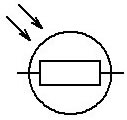
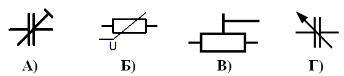
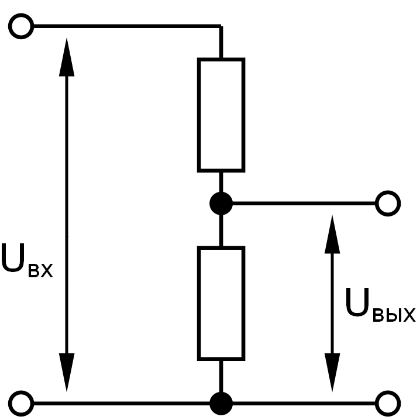
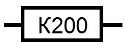

Электроника
учебно-справочное пособие
Главная
Теория
Практика
Справочники
Схемы
Тесты
Тест "Резисторы"
1. Какое номинальное сопротивление имеет резистор с обозначением на корпусе 1K2?
1,2 килограмм
1200 Ом
12 килоВатт
1,2 килоВольт
2. Какую функцию выполняет резистор в электрической цепи?
Ограничивает силу тока.
Накапливает заряды.
Выпрямляет переменный ток.
Увеличивает емкость цепи.
3. УГО какого элемента схемы изображено на рисунке?

Фотодиод.
Фоторезистор.
Светодиод.
Геркон.
4. 1,5 килом равен …
150 Ом
1500 Ом
0,015 МОм
0,15 Ом
5. В каких единицах измеряется мощность рассеивания резистора?
Ампер
Вольт
Ом
Ватт
6. Каким свойством обладают терморезисторы?
Изменяют сопротивление при изменении силы светового потока.
Изменяют сопротивление при изменении напряжения.
Изменяют сопротивление при изменении температуры.
Изменяют сопротивление при изменении влажности.
7. Что показывает допуск номинального сопротивления резистора?
Габаритные размеры.
Отклонение фактического сопротивления от номинального сопротивления.
Способность выделять тепло.
Способность выдерживать высокие напряжения.
8. Какое изображение соответствует условному графическому обозначению подстроечного резистора?

А
Б
В
Г
9. Какое свойство резистора показывает мощность рассеивания?
Способность выделять тепло.
Размеры пространства на которое влияет ток резистора.
Способность выдерживать высокие напряжения.
Отклонение фактического сопротивления от номинального сопротивления.
10. Схема какого устройства изображена на рисунке?

Делитель напряжения.
Индуктивный фильтр.
Однополупериодный выпрямитель.
Усилитель тока.
11. Какое номинальное сопротивление имеет резистор, показанный на рисунке?

2 килоОм
200 Ом
200 килоОм
2 мегаОм
12. Из какого материала изготавливаются терморезисторы?
Железо
Пластмасса
Слюда
Полупроводники